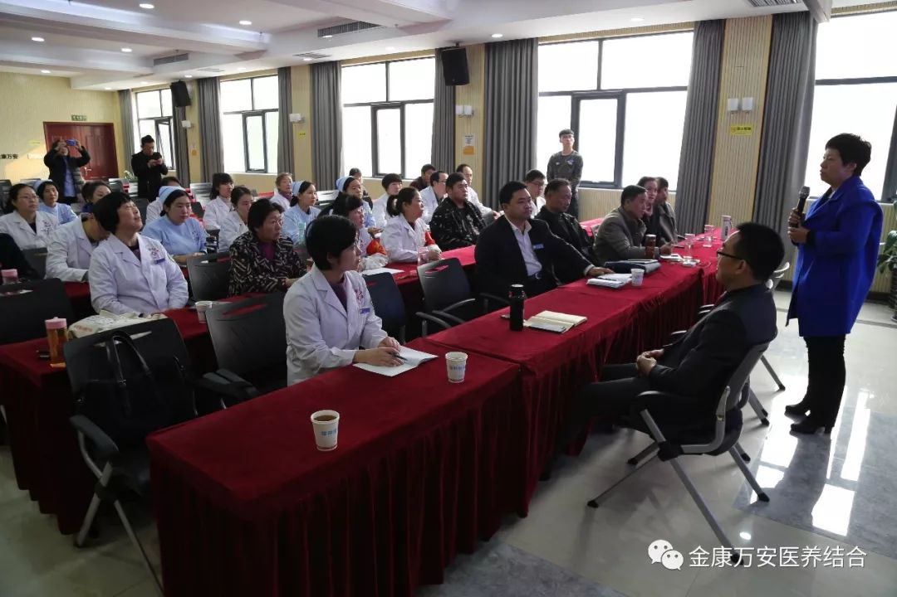
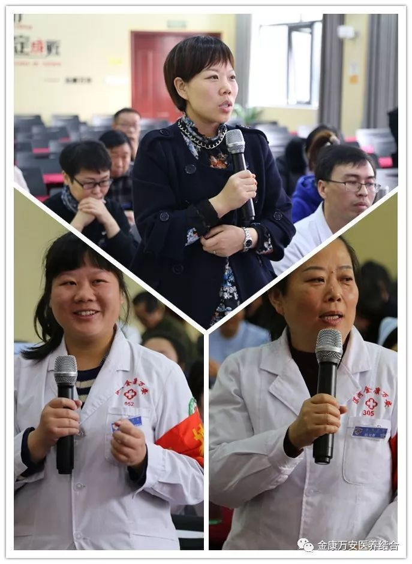
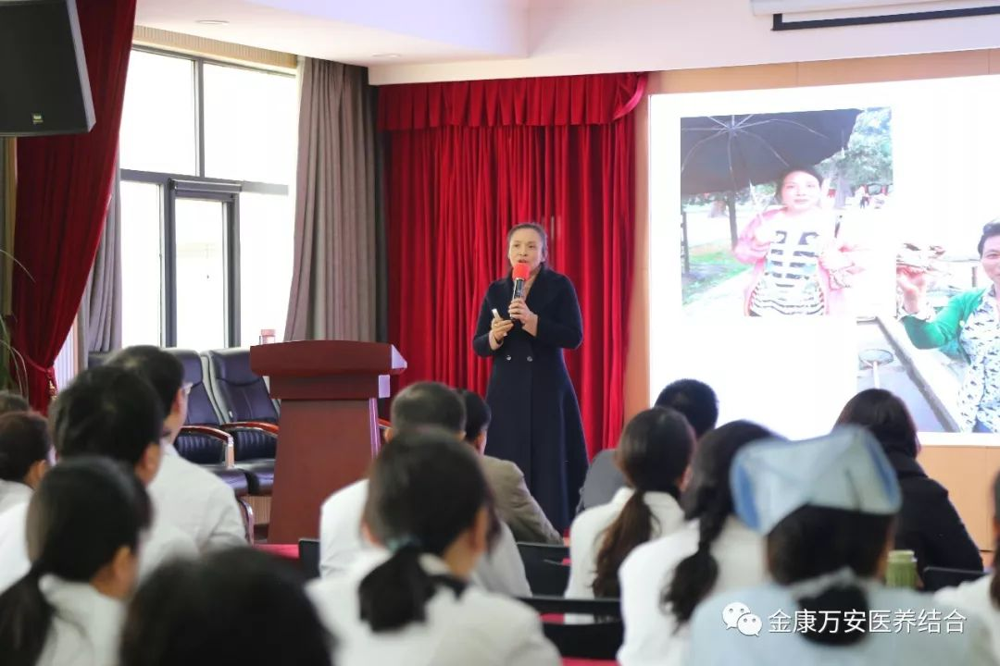
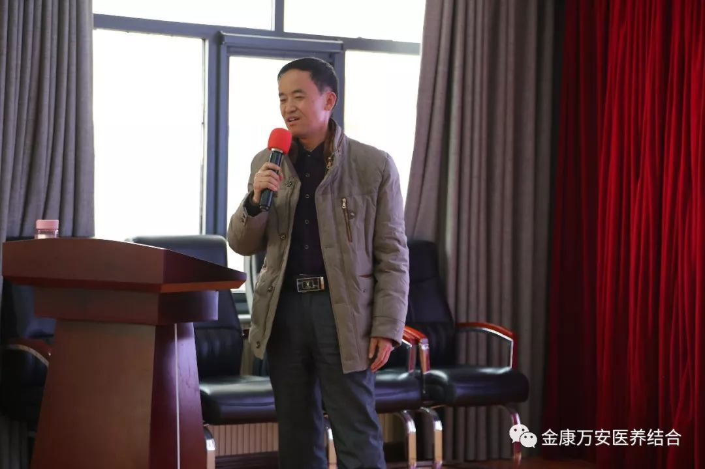
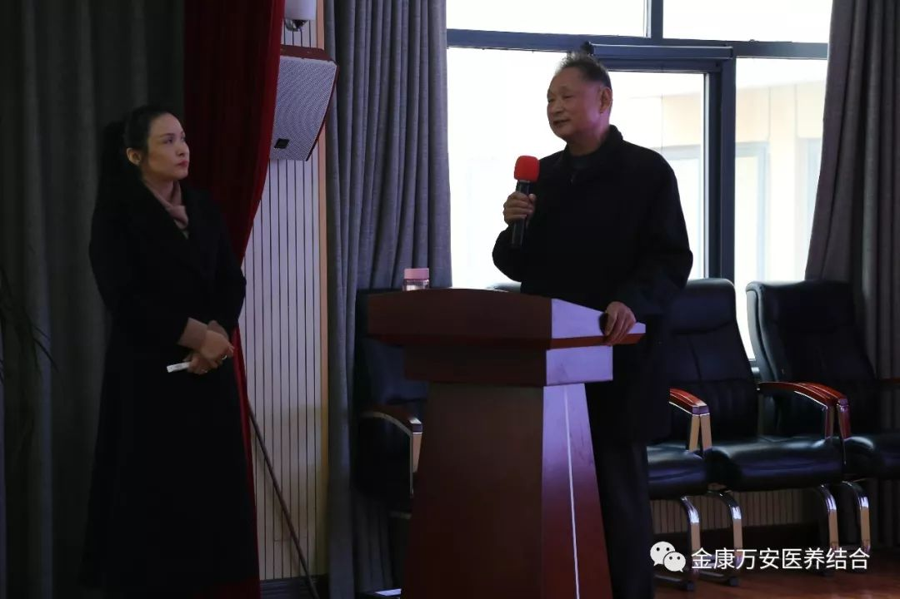

生活环境恶化、个人不良习惯是导致现代人各种疾病井喷的主要原因,拥有健康的生活方式、健康的生活习惯已经成为当代人自身成长的一项重要的任务。11月21号上午，北京食科金元有限公司董事长梁玉军携健康管理团队走进漯河万安医院参观指导。
为了让更多的家人了解健康管理的重要性，院长王卫峰邀请梁董事长及健康管理团队的专家对金康万安的家人们上了一堂形象生动的健康管理培训课程。院长王卫峰等院领导及120余名医护人员参加了此次培训。
培训开始之前王卫峰院长首先对梁董事长及健康管理团队的专家来我院指导工作表示欢迎，王院长说：健康管理是当下发展的一个大趋势，现代城市生活的快节奏和丰富多彩，不仅给大家带来益处，也带来了很多健康问题，现在很多人忙绿的同时忽略了自己的健康，王卫峰院长通过自己亲身经历向大家阐述了健康管理的重要性，同时也希望与食科金元强强联合，共同在漯河打造健康管理产业，为更多的人带去健康。
培训现场，参与健康管理的家人们也通过自己的亲身经历分享了自己经过健康管理后获得的变化及感受，并提出他们的问题；分享结束后，梁玉军董事长根据大家提出的问题用自己的亲身经历和科学的方法为大家讲解分析，用通俗易懂的话语解除了大家对健康管理心中的疑虑。
 下午，南京旅嘉健康管理有限公司健康管理师宗贞成老师通过真实的案例为大家讲解了：健康饮食讲解、合理膳食讲解、疾病调理讲解、调节四高讲解等健康知识。宗老师通过事实案例分析，详细、生动的给大家讲解了健康生活的重要性，引导大家告别不良生活方式、提高生活质量。
  此次培训得到了院领导和家人们的一致好评！通过此次健康管理知识培训，使大家提高了健康生活意识，增加了健康生活观念，警示大家告别不良习惯，拥抱健康生活！